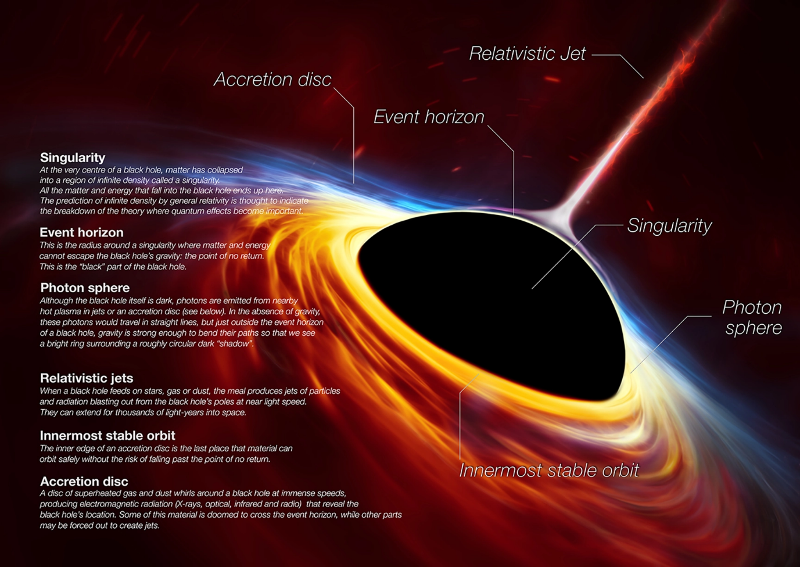
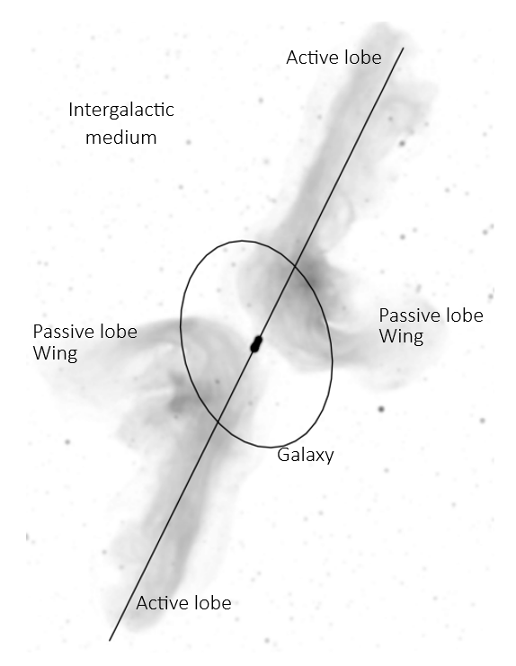
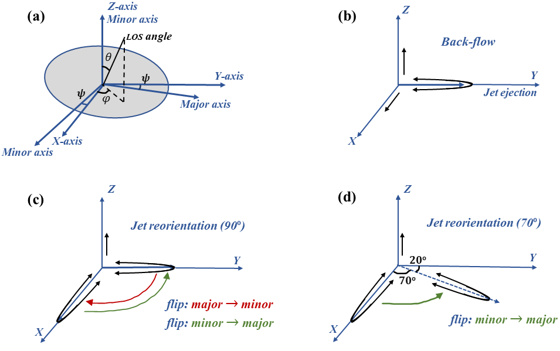
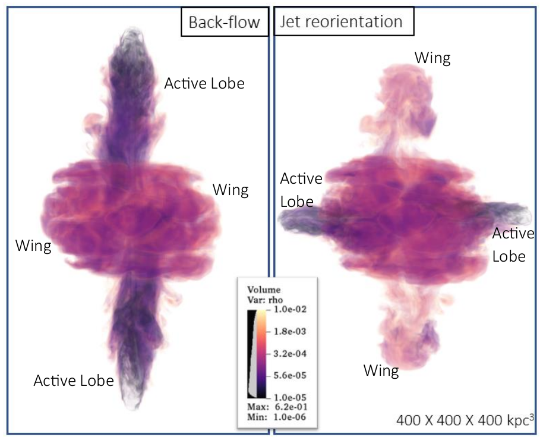

Bending/Flipping/Reorienting: Superheated plasma outflow from supermassive blackhole producing ‘X’-like fountains
Embark on a cosmic journey as Gourab Giri explores the enigmatic X-shaped structures observed in radio galaxies, formed by the ejection of jets from supermassive black holes.
Galaxies which are made up of stars and gasses (primarily hydrogen and helium) typically extend over a hundred thousand light years. According to our current understanding of galaxies, it is believed that the majority of them possess a supermassive black hole at their center. In a small fraction of instances, supermassive black holes are observed to transition into an active phase (the reason for which is yet uncertain). During this phase, they not only accrete surrounding gas at an accelerated rate but also throw bits of this matter in the form of jets. These jets consist of super-heated plasma matter gathered from the accretion disc, which is a disc through which a black hole accretes surrounding gas. A part of this matter gets ejected along the black hole’s spinning axis due to strong magnetic disturbances near the accretion zone, helping to maintain the system’s momentum. These events are considered as some of the most powerful incidents in the universe, releasing energy higher than the explosion of a million stars. During these events, the ejected jets of matter travel at speeds approaching that of light, and can extend for distances of several millions of light-years. The ejected matter is expected to propagate along a predestined bidirectional straight path, following the spinning axis of the blackhole (Fig. 1).

Fig. 1: Artist's impression of what a black hole, its accretion system, and the ejected jets of plasma matter might look like. The black hole is presented in black as no light can escape its gravitational influence beyond a certain point known as the event horizon. The black hole accretes surrounding gas through an accretion disc, and some of the material flowing in this disk is thrown along the black hole's spinning axis in the form of jets (matter captured from outside the event horizon). The 'innermost stable orbit' and 'photon sphere' are the last stable orbits around a black hole where matter and light can remain in stable orbits without falling into the black hole, respectively. [Credit: ESO ]
Now, let’s discuss the environment through which these jets travel. As mentioned earlier, these jets can cover distances of several million light-years, surpassing the extent of their host galaxies. So, the jets enter into a region known as the intergalactic medium, which lies between galaxies. These mediums are an integral part of the ‘galaxy groups’ or ‘galaxy clusters’, spanning sizes 10-100 times larger than a typical galaxy and housing tens of galaxies within them. In addition to galaxies, these cluster or group mediums are primarily filled with superheated gas, which is incredibly sparse (about 10-25 times less dense than Earth’s air). It’s important to emphasize here that the density of the jets is even lower than that of such surrounding medium. Therefore, when a jet travels through such a medium, it undergoes a significant collision and has to drill through it. This gas in clusters or groups exists in the form of superheated plasma at temperatures of around several million Kelvin, causing it to emit X-rays, which are at the high-energy end of the electromagnetic spectrum. Therefore, to detect their presence, we require X-ray telescopes. Whereas, the plasma outflow from the black hole primarily emits low-energy radio waves, and this emission occurs through a process called synchrotron radiation. In this process, plasma particles revolve around magnetic fields, producing electromagnetic radiation primarily in the form of radio waves.
A very small number of these high-speed outflows do not follow their expected paths and instead create curved or bent shapes in the jets (topic of discussion here). Modern radio telescopes with advanced capabilities are now discovering more of these unusual sources. To illustrate one of these anomalies, we will focus on the radio galaxies featuring ‘X-like’ structures. In such sources, in addition to the usual two-directional jet flow, one observes another pair of jet lobes at an angle, forming an X- like shape. These shapes are so unique that we still don’t fully understand how they form. In Fig. 2, we highlight one such source recently discovered using a modern radio telescope in South Africa.

Fig. 2: X-shaped Radio Galaxy
The galaxy ‘PKS 2014-55’ has been observed using a radio telescope at 1.2 giga-Hertz. In the image, you see a faint gray structure representing a radio galaxy. Notably, there's a jet of plasma matter extending from the galaxy's center to a distance of several million light-years. This distance is much larger than the size of the host galaxy, marked by an elliptical shape. Initially, the jet moves in a straight line, indicated by a solid black line. However, it's clear that the main jet changes direction and splits into another pair of jet structures known as wings, creating an X-shaped pattern. [Credit: Cotton et al 2020 ]
I, as the lead author, along with a team of astronomers including Bhargav Vaidya from the Indian Institute of Technology Indore and Christian Fendt from the Max Planck Institute for Astronomy, conducted a study to investigate the formation process of the unusual morphology observed in radio wavelengths in space. To understand the origins and evolution of these unique systems, our focus was on generating these sources through robust computer simulations. This approach was necessary because the natural evolution of these structures typically spans millions of years. To create realistic computer models of these sources, we started by examining advanced radio telescope observations. Following that, we determined the initial conditions for our models using the observational insights related to the environment and sources in which they develop. Next, we implemented the physical processes believed to form these structures. Astronomers proposed two possibilities: (a) an ellipsoidal intergalactic medium causing automatic jet deflection (Backflow), or (b) a complex process near the black hole that forcefully changes the jet’s ejection axis (jet-reorientation). In our study, we explored these two scenarios by incorporating them into our initial conditions and conducting simulations over hundreds of millions of years. To note, we created an ellipsoidal intergalactic medium first, representing a galaxy cluster for the jet to propagate through (Fig. 3). Then, in the first set of simulations, we allowed the jet to propagate undisturbed along one particular direction to observe if it would result in an X-like morphology later on (Backflow case). In the second set, we initially let the jet propagate undisturbed for 70 million years, and then we flipped its direction by 70 to 90 degrees, leading to the formation of X-like structures (jet-reorientation case).

Fig. 3: A cartoon figure illustrating the ellipsoidal environment representing a galaxy cluster, from the center of which a bidirectional jet begins to propagate (sub-fig (a)). Subfigure (b) depicts the physical process in which we allowed the jet to propagate undisturbed to test whether the tri-axial environment creates any X-like structures. In subfigures (c) and (d), we demonstrated the physical process in which the jet's propagation direction is forcefully changed to a newer angle of 90 and 70 degrees, respectively, to once again verify whether this model is also capable of generating the X-shaped patterns observed in the vast cosmos. [Refer to the paper]
Through this computer modeling, we wanted to study two crucial aspects: (i) to verify whether there exists any universal formation process that can explain all the observed properties of such sources, and (ii) If not, then determine whether these different formation processes generate any distinguishing signatures that can be used to identify individual models. As we analyzed the outcomes of our simulations running for approximately hundred million years, we uncovered some surprising findings. We observed significant variations in the size and shape of the formed structures, despite all the models generating X-like structures as observed. These differences were particularly evident in the collimation of the arms of the X-shaped morphology, especially in the passive arms where a dying out jet or jet remnant, referred to as a ‘wing’ (see Fig. 2), evolves. Considering the shape, we noticed that when an X-shape formed due to the influence of an ellipsoidal ambient medium (Backflow case), the wings appeared broad and diffuse perpendicular to the jet material’s propagation axis. However, when the jet’s propagation axis was forcibly changed at the center of ejection (jet-reorientation case), the collimation of all four arms of the X-shape remained intact, i.e., they did not get diffused (Fig. 4). In terms of size, we found that the ratio of the length of the passive arm (wing) to the active arm (active lobe) of the X-shape could be less than, equal to, or even greater than one, as also observed in real-world cases in the cosmos. This could be explained by the natural phenomenon of jet reorientation. But it appeared challenging to explain this observational fact when the ambient medium primarily played a role in forming the X-shape by deflecting the jetted material laterally (Backflow model). We gathered similar evidence by studying the cluster environment using X-rays, through which the jet had traveled. As the high-speed jet penetrated the denser ambient medium, it drilled through it, leaving marks of its morphology in the cluster medium by forming less intense cavity regions, bearing the signature of the jet’s morphology imprinted upon them, significantly disrupting the medium. The key finding to note from all these results is that there may not exist any universal model that can naturally account for all the characteristics of X-shaped sources; We are in need of all the models.

Fig. 4: After nearly a hundred million years of evolution, the ejected jets form X-like structures based on the individual model, each following a different physical process. The point to be noted here is that the structures still exhibit differences in their size (look at the linear and lateral sizes of the arms) and shapes (look at the collimation of the arms), which can serve as distinguishing characteristics for determining the underlying origin when studying X-shaped sources through observation. [Refer to the paper]
In summary, this study not only demonstrates the computer modeling of likely formation processes and long-term evolution of such sources, but also highlights possible properties associated with X- shapes that can be further used to differentiate between different formation models. In a broader context, the study particularly showcases that the ambient medium through which these jets propagate has a strong interconnected nature. Therefore, any ambiguities appearing in jet morphology are also expected to leave their signature in the ambient environment. This, in turn, can serve as an alternative source of information in understanding the ambiguities occurring within the jet.
Original paper: Deciphering the morphological origins of X-shaped radio galaxies: Numerical modeling of Back-flow vs. Jet-reorientation
First Author: Gourab Giri
Co-authors: Bhargav Vaidya, Christian Fendt
First author’s Institution: Indian Institute of Technology Indore, India